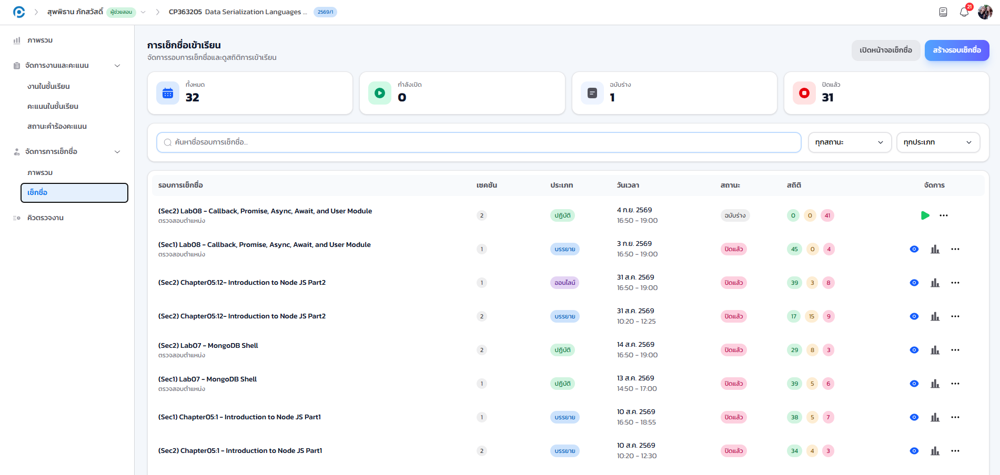
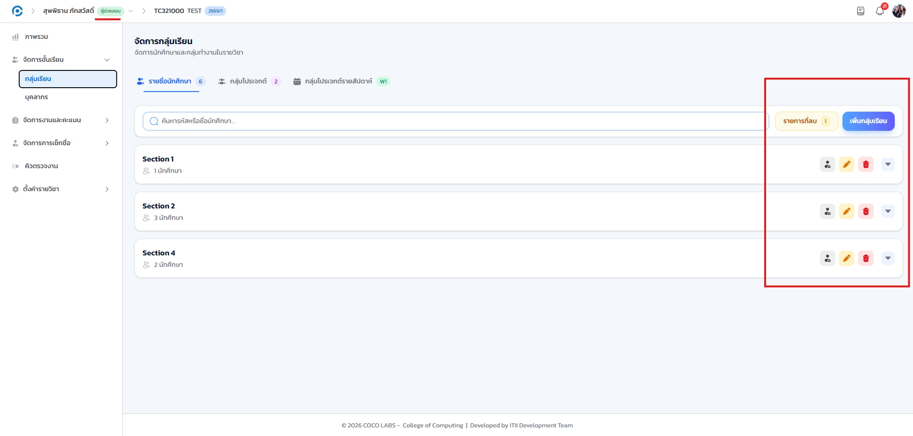

นอกเหนือจากงานคิว (บทที่ 16) และการให้คะแนน (บทที่ 17) แล้ว อาจารย์เจ้าของวิชายังมอบสิทธิ์เพิ่มเติมให้ผู้ช่วยสอนบางคนช่วยงานอื่นในรายวิชาได้ ขั้นตอนการใช้งานเหมือนกับที่อธิบายไว้ในภาคของอาจารย์ทุกประการ ต่างกันเพียงเมนูจะปรากฏเฉพาะเมื่อได้รับสิทธิ์นั้นเท่านั้น (ดูหลักการมอบสิทธิ์ในบทที่ 15)
18.1 การจัดการเช็กชื่อ#
เป้าหมายของขั้นตอนนี้ เปิดหรือจัดการรอบเช็กชื่อแทนอาจารย์ เมื่อได้รับสิทธิ์การเช็กชื่อ
- เข้าเมนู จัดการการเช็กชื่อ > เช็กชื่อ ที่แถบด้านซ้ายของรายวิชา (เมนูนี้จะปรากฏเฉพาะเมื่อได้รับสิทธิ์)
- สร้างและเปิดรอบเช็กชื่อใหม่ ฉาย PIN และ QR ให้นักศึกษาสแกน แล้วปิดรอบเมื่อจบคาบ
- แก้ไขสถานะการเข้าเรียนย้อนหลังได้ตามที่อาจารย์มอบหมาย เช่น กรณีนักศึกษาลาป่วย

ขั้นตอนโดยละเอียดทั้งหมด ตั้งแต่การสร้างรอบ การฉาย PIN และ QR ไปจนถึงการปิดรอบและแก้ไขสถานะย้อนหลัง เหมือนกับที่อธิบายไว้ในบทที่ 10 การเช็กชื่อเข้าเรียน ทุกประการ เนื่องจากเป็นหน้าจอเดียวกับที่อาจารย์ใช้
18.2 การจัดการหมู่เรียนและกลุ่ม#
เป้าหมายของขั้นตอนนี้ ช่วยจัดหมู่เรียนหรือกลุ่มโปรเจกต์ของนักศึกษา เมื่อได้รับสิทธิ์จัดการกลุ่ม
- เข้าเมนู จัดการชั้นเรียน > กลุ่มเรียน ที่แถบด้านซ้ายของรายวิชา
- จัดการหมู่เรียน (Section) หรือกลุ่มโปรเจกต์ (Teams) ตามที่อาจารย์มอบหมาย เช่น ย้ายนักศึกษาระหว่างกลุ่ม หรือปรับจำนวนสมาชิกต่อกลุ่ม

วิธีจัดการหมู่เรียนและกลุ่มโปรเจกต์โดยละเอียดเหมือนกับที่อธิบายไว้ในบทที่ 5 การจัดการหมู่เรียนและกลุ่ม ทุกประการ
เมนูที่ปรากฏขึ้นอยู่กับสิทธิ์ที่อาจารย์กำหนดให้เสมอ หากต้องการทำงานใดเพิ่มเติมแต่ไม่พบเมนูดังกล่าว ให้ประสานอาจารย์เจ้าของวิชาเพื่อขอสิทธิ์ที่แท็บบุคลากรของรายวิชา ส่วนการตั้งค่าบัญชีส่วนตัว (โปรไฟล์ การยืนยันตัวตนสองขั้นตอน ธีม/ภาษา และอุปกรณ์ที่เข้าสู่ระบบ) ใช้งานร่วมกับทุกบทบาท ดูรายละเอียดในบทที่ 2 บัญชีผู้ใช้และความปลอดภัย